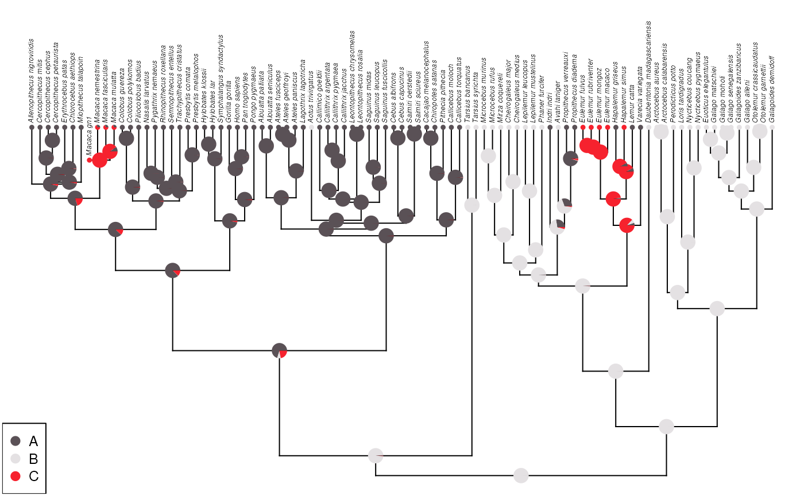
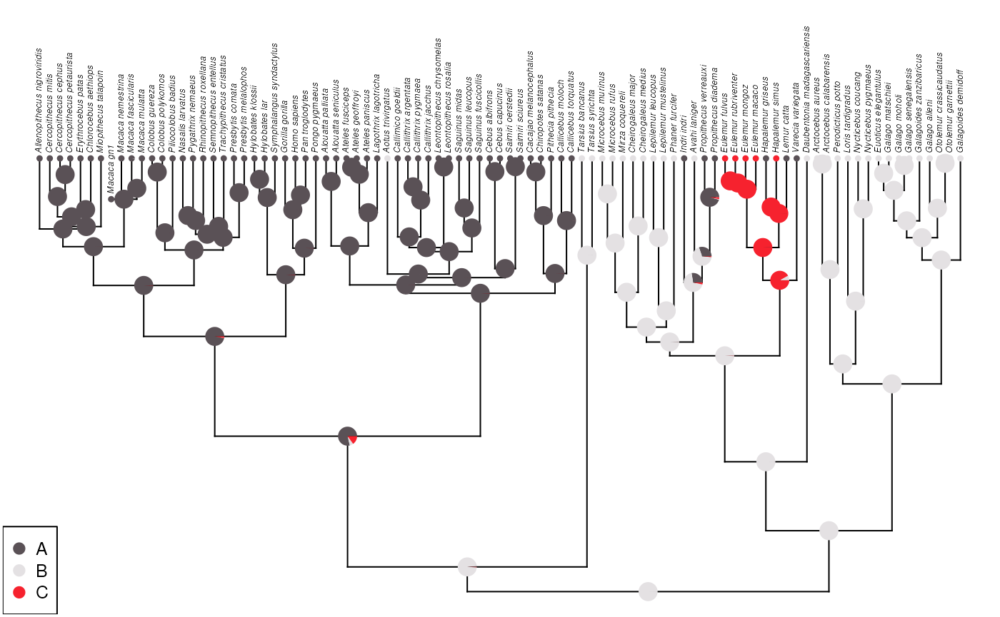
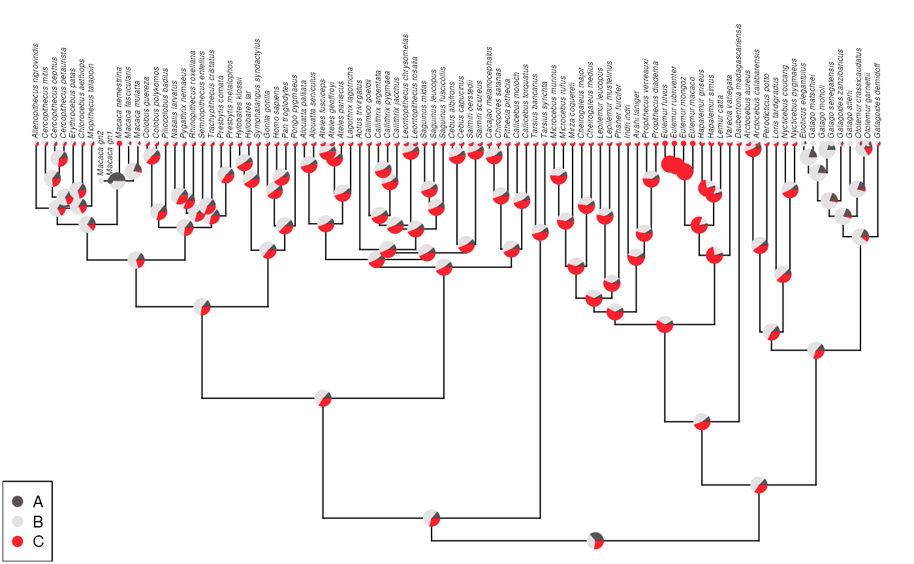
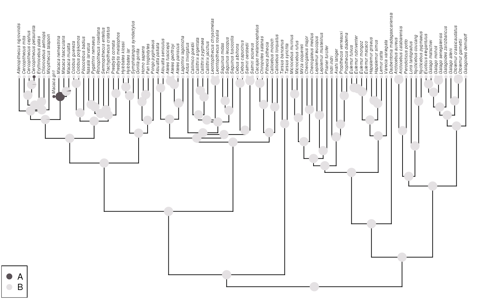
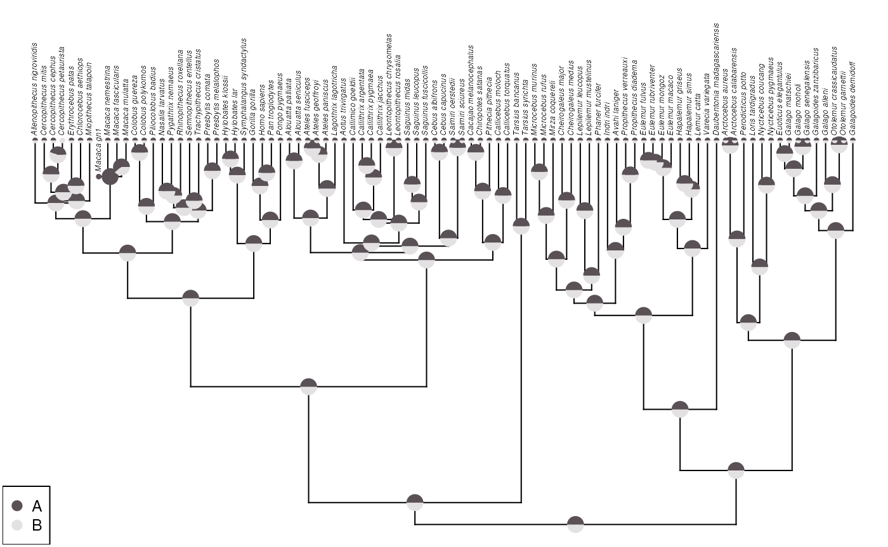

Data
data('primate.tree')
data('primate.data')
tre <- primate.tree
dat <- primate.data
states_original <- dat |>
rownames_to_column(var = 'tip_label') |>
select(tip_label, Activity_pattern) |>
mutate(state = 1) |>
pivot_wider(
names_from = 'Activity_pattern', values_from = 'state', values_fill = 0
) |>
column_to_rownames(var = 'tip_label') |>
as.matrix() |>
magrittr::set_colnames(LETTERS[1:3])
states_original <- states_original[tre$tip.label,]
macaca <- grep('^Macaca_', rownames(states_original)) # ?
galago <- grep('^Galago_', rownames(states_original)) # B
eulemur <- grep('^Eulemur', rownames(states_original)) # C
states <- states_original
states[] <- 1 / ncol(states)
# m1[macaca, ] <- c(rep(1,3), rep(0, 6))
states[galago, ] <- c(rep(0,4), rep(1, 4), rep(0, 4))
states[eulemur, ] <- c(rep(0,8), rep(1, 4))
myMod <- 'ARD'
myPi <- 'fitzjohn'Annotate one genus with an additional tip of zero length
This is the recommended way of adding an annotations to an internal node.
macaca <- grep('Macaca', rownames(states))
macaca_mrc <- findMRCA(tree = tre, tips = rownames(states)[macaca])
t1 <- bind.tip(tre, tip.label = 'Macaca_gn1', edge.length = 0, where = macaca_mrc)
m1 <- states_original
# m1[] <- 1 / 3
m1 <- rbind(m1, matrix(c(A = 0, B = 0, C = 1), nrow = 1, byrow = TRUE))
rownames(m1)[nrow(m1)] <- 'Macaca_gn1'
m1[macaca,] <- rep(1 / ncol(m1), length(macaca) * 3)
fit1 <- fitMk(
tree = t1, x = m1, model = myMod, pi = myPi, lik.func = "pruning",
logscale = TRUE
)
ace1 <- ancr(fit1, tips=TRUE)
plot(ace1, args.plotTree = list(direction = "upwards"))
However, in some cases, one might need to add two or more tips carrying conclicting annotations. If both are of length zero, this throws an error:
macaca_mrc2 <- findMRCA(t1, tips = rownames(states)[macaca])
t2 <- bind.tip(t1, tip.label = 'Macaca_gn2', edge.length = 0, where = macaca_mrc2)
m2 <- states
m2 <- rbind(m2, matrix(c(A = 0, B = 0, C = 1), nrow = 1, byrow = TRUE))
m2 <- rbind(m2, matrix(c(A = 0, B = 1, C = 0), nrow = 1, byrow = TRUE))
rownames(m2)[nrow(m2) - 1] <- 'Macaca_gn1'
rownames(m2)[nrow(m2)] <- 'Macaca_gn2'
m2[grep('^Macaca_[^g][^n][^\\d].*', rownames(m2)),] <- rep(1 / ncol(m2), length(macaca) * 3)
fit2 <- tryCatch(
error = function(e) e,
{
fitMk(
tree = t2, x = m2, model = myMod, pi = myPi,
lik.func = "pruning", logscale = TRUE
)
}
)
print(fit2$message)
#> [1] "BLAS/LAPACK routine 'DGEBAL' gave error code -3"Annotate one genus with an additional tip of length 1e-06
A solultion to the issue described above could be adding small quantity to the branch length of the additional tips instead of a hard zero, e.g., 1e-06. At least with the example below, the output seems to be the same (compare with the first very firt case in this document).
macaca <- grep('Macaca', rownames(states))
macaca_mrc <- findMRCA(tree = tre, tips = rownames(states)[macaca])
t1 <- bind.tip(tre, tip.label = 'Macaca_gn1', edge.length = 1e-06, where = macaca_mrc)
m1 <- states_original
# m1[] <- 1 / 3
m1 <- rbind(m1, matrix(c(A = 0, B = 0, C = 1), nrow = 1, byrow = TRUE))
rownames(m1)[nrow(m1)] <- 'Macaca_gn1'
m1[macaca,] <- rep(1 / ncol(m1), length(macaca) * 3)
fit1 <- fitMk(
tree = t1, x = m1, model = myMod, pi = myPi, lik.func = "pruning",
logscale = TRUE
)
ace1 <- ancr(fit1, tips=TRUE)
plot(ace1, args.plotTree = list(direction = "upwards"))If genus internal node is unknown it won’t affect the other results.
macaca <- grep('Macaca', rownames(states))
macaca_mrc <- findMRCA(tree = tre, tips = rownames(states)[macaca])
t1 <- bind.tip(tre, tip.label = 'Macaca_gn1', edge.length = 1e-06, where = macaca_mrc)
m1 <- states_original
# m1[] <- 1 / 3
m1 <- rbind(m1, matrix(c(A = 0, B = 0, C = 1), nrow = 1, byrow = TRUE))
rownames(m1)[nrow(m1)] <- 'Macaca_gn1'
m1[macaca,] <- rep(1 / ncol(m1), length(macaca) * 3)
m1[macaca,] <- c(1, 1/3, 1, 0, 1/3, 0, 0, 1/3, 0)
m1['Macaca_gn1',] <- c(1/3, 1/3, 1/3)
fit1 <- fitMk(
tree = t1, x = m1, model = myMod, pi = myPi, lik.func = "pruning",
logscale = TRUE
)
ace1 <- ancr(fit1, tips=TRUE)
plot(ace1, args.plotTree = list(direction = "upwards"))
Addint two tips with branch length of 1e-06
Now let’s see if this has the expected result if I have two annotations. For this, I’ll make all annotations uncertain, except for the tips of the genus Eulermur (C/red) and Galago (B/white). I’ll add two conflicting annotations to the genus Macaca using two tips with branch length of 1e-06. This seems to have given the expected result: half and half.
t3 <- bind.tip(tre, tip.label = 'Macaca_gn1', edge.length = 1e-06, where = macaca_mrc)
macaca_mrc3 <- findMRCA(t3, tips = rownames(states)[macaca])
t4 <- bind.tip(t3, tip.label = 'Macaca_gn2', edge.length = 1e-06, where = macaca_mrc3)
m3 <- states
m3 <- rbind(m3, matrix(c(A = 1, B = 0, C = 0), nrow = 1, byrow = TRUE))
m3 <- rbind(m3, matrix(c(A = 0, B = 1, C = 0), nrow = 1, byrow = TRUE))
rownames(m3)[nrow(m3) - 1] <- 'Macaca_gn1'
rownames(m3)[nrow(m3)] <- 'Macaca_gn2'
m3[grep('^Macaca_[^g][^n][^\\d].*', rownames(m3)),] <- rep(1 / ncol(m3), length(macaca) * 3)
fit3 <- fitMk(
tree = t4, x = m3, model = myMod, pi = myPi, lik.func = "pruning",
logscale = TRUE
)
ace3 <- ancr(fit3, tips=TRUE)
plot(ace3, args.plotTree = list(direction = "upwards"))
Adding an annotation for one of the descendant species
If I add an annotation for one of the descendat species of the target genus, the approach that I tried above still works.
t3 <- bind.tip(tre, tip.label = 'Macaca_gn1', edge.length = 1e-06, where = macaca_mrc)
macaca_mrc3 <- findMRCA(t3, tips = rownames(states)[macaca])
t4 <- bind.tip(t3, tip.label = 'Macaca_gn2', edge.length = 1e-06, where = macaca_mrc3)
m3 <- states
m3 <- rbind(m3, matrix(c(A = 1, B = 0, C = 0), nrow = 1, byrow = TRUE))
m3 <- rbind(m3, matrix(c(A = 0, B = 1, C = 0), nrow = 1, byrow = TRUE))
rownames(m3)[nrow(m3) - 1] <- 'Macaca_gn1'
rownames(m3)[nrow(m3)] <- 'Macaca_gn2'
m3[grep('^Macaca_[^g][^n][^\\d].*', rownames(m3)),] <- rep(1 / ncol(m3), length(macaca) * 3)
m3['Macaca_nemestrina',] <- c(0, 0, 1)
fit3 <- fitMk(
tree = t4, x = m3, model = myMod, pi = myPi, lik.func = "pruning",
logscale = TRUE
)
ace3 <- ancr(fit3, tips=TRUE)
plot(ace3, args.plotTree = list(direction = "upwards"))
A single value
mat <- matrix(rep(0, (Ntip(t3) * 2)), ncol = 2)
colnames(mat) <- LETTERS[1:2]
rownames(mat) <- t3$tip.label
mat[] <- 0.5
mat[grep('Macaca_gn1', rownames(mat)),] <- c(1, 0)
fitX <- fitMk(
tree = t3, x = mat, model = myMod, pi = myPi, lik.func = "pruning",
logscale = TRUE
)
aceX <- ancr(fitX, tips=TRUE)
plot(aceX, args.plotTree = list(direction = "upwards"))
mat2 <- matrix(rep(0, (Ntip(t3) * 2)), ncol = 2)
colnames(mat2) <- LETTERS[1:2]
rownames(mat2) <- t3$tip.label
mat2[,1] <- 0
mat2[,2] <- 1
mat2[grep('Macaca_gn1', rownames(mat2)),] <- c(1, 0)
mat2[grep('Cercopithecus_petaurista', rownames(mat2)),] <- c(1, 0)
fitY <- fitMk(
tree = t3, x = mat2, model = 'ER', pi = myPi, lik.func = "pruning",
logscale = TRUE
)
aceY <- ancr(fitY, tips=TRUE)
plot(aceY, args.plotTree = list(direction = "upwards"))
mat2 <- matrix(rep(0, (Ntip(t3) * 2)), ncol = 2)
colnames(mat2) <- LETTERS[1:2]
rownames(mat2) <- t3$tip.label
mat2[] <- 0.5
mat2[grep('Macaca_gn1', rownames(mat2)),] <- c(1, 0)
mat2[grep('Cercopithecus_petaurista', rownames(mat2)),] <- c(0, 1)
fitY <- fitMk(
tree = t3, x = mat2, model = 'ARD', pi = myPi, lik.func = "pruning",
logscale = TRUE
)
aceY <- ancr(fitY, tips=TRUE)
plot(aceY, args.plotTree = list(direction = "upwards"))
Session information
sessioninfo::session_info()
#> ─ Session info ───────────────────────────────────────────────────────────────
#> setting value
#> version R version 4.4.1 (2024-06-14)
#> os Ubuntu 22.04.4 LTS
#> system x86_64, linux-gnu
#> ui X11
#> language en
#> collate en_US.UTF-8
#> ctype en_US.UTF-8
#> tz Etc/UTC
#> date 2024-11-21
#> pandoc 3.2 @ /usr/bin/ (via rmarkdown)
#>
#> ─ Packages ───────────────────────────────────────────────────────────────────
#> package * version date (UTC) lib source
#> ape * 5.8 2024-04-11 [1] RSPM (R 4.4.0)
#> bslib 0.8.0 2024-07-29 [1] RSPM (R 4.4.0)
#> cachem 1.1.0 2024-05-16 [1] RSPM (R 4.4.0)
#> cli 3.6.3 2024-06-21 [1] RSPM (R 4.4.0)
#> clusterGeneration 1.3.8 2023-08-16 [1] RSPM (R 4.4.0)
#> coda 0.19-4.1 2024-01-31 [1] RSPM (R 4.4.0)
#> codetools 0.2-20 2024-03-31 [2] CRAN (R 4.4.1)
#> combinat 0.0-8 2012-10-29 [1] RSPM (R 4.4.0)
#> DEoptim 2.2-8 2022-11-11 [1] RSPM (R 4.4.0)
#> desc 1.4.3 2023-12-10 [1] RSPM (R 4.4.0)
#> digest 0.6.37 2024-08-19 [1] RSPM (R 4.4.0)
#> doParallel 1.0.17 2022-02-07 [1] RSPM (R 4.4.0)
#> dplyr * 1.1.4 2023-11-17 [1] RSPM (R 4.4.0)
#> evaluate 1.0.1 2024-10-10 [1] RSPM (R 4.4.0)
#> expm 1.0-0 2024-08-19 [1] RSPM (R 4.4.0)
#> fansi 1.0.6 2023-12-08 [1] RSPM (R 4.4.0)
#> fastmap 1.2.0 2024-05-15 [1] RSPM (R 4.4.0)
#> fastmatch 1.1-4 2023-08-18 [1] RSPM (R 4.4.0)
#> foreach 1.5.2 2022-02-02 [1] RSPM (R 4.4.0)
#> fs 1.6.5 2024-10-30 [1] RSPM (R 4.4.0)
#> generics 0.1.3 2022-07-05 [1] RSPM (R 4.4.0)
#> glue 1.8.0 2024-09-30 [1] RSPM (R 4.4.0)
#> htmltools 0.5.8.1 2024-04-04 [1] RSPM (R 4.4.0)
#> htmlwidgets 1.6.4 2023-12-06 [1] RSPM (R 4.4.0)
#> igraph 2.1.1 2024-10-19 [1] RSPM (R 4.4.0)
#> iterators 1.0.14 2022-02-05 [1] RSPM (R 4.4.0)
#> jquerylib 0.1.4 2021-04-26 [1] RSPM (R 4.4.0)
#> jsonlite 1.8.9 2024-09-20 [1] RSPM (R 4.4.0)
#> knitr 1.49 2024-11-08 [1] RSPM (R 4.4.0)
#> lattice 0.22-6 2024-03-20 [2] CRAN (R 4.4.1)
#> lifecycle 1.0.4 2023-11-07 [1] RSPM (R 4.4.0)
#> magrittr 2.0.3 2022-03-30 [1] RSPM (R 4.4.0)
#> maps * 3.4.2.1 2024-11-10 [1] RSPM (R 4.4.0)
#> MASS 7.3-61 2024-06-13 [2] RSPM (R 4.4.0)
#> Matrix 1.7-0 2024-04-26 [2] CRAN (R 4.4.1)
#> mnormt 2.1.1 2022-09-26 [1] RSPM (R 4.4.0)
#> nlme 3.1-165 2024-06-06 [2] RSPM (R 4.4.0)
#> numDeriv 2016.8-1.1 2019-06-06 [1] RSPM (R 4.4.0)
#> optimParallel 1.0-2 2021-02-11 [1] RSPM (R 4.4.0)
#> phangorn 2.12.1 2024-09-17 [1] RSPM (R 4.4.0)
#> phytools * 2.3-0 2024-06-13 [1] RSPM (R 4.4.0)
#> pillar 1.9.0 2023-03-22 [1] RSPM (R 4.4.0)
#> pkgconfig 2.0.3 2019-09-22 [1] RSPM (R 4.4.0)
#> pkgdown 2.1.1 2024-09-17 [1] RSPM (R 4.4.0)
#> purrr 1.0.2 2023-08-10 [1] RSPM (R 4.4.0)
#> quadprog 1.5-8 2019-11-20 [1] RSPM (R 4.4.0)
#> R6 2.5.1 2021-08-19 [1] RSPM (R 4.4.0)
#> ragg 1.3.2 2024-05-15 [1] RSPM (R 4.4.0)
#> Rcpp 1.0.13-1 2024-11-02 [1] RSPM (R 4.4.0)
#> rlang 1.1.4 2024-06-04 [1] RSPM (R 4.4.0)
#> rmarkdown 2.29 2024-11-04 [1] RSPM (R 4.4.0)
#> sass 0.4.9 2024-03-15 [1] RSPM (R 4.4.0)
#> scatterplot3d 0.3-44 2023-05-05 [1] RSPM (R 4.4.0)
#> sessioninfo 1.2.2 2021-12-06 [1] RSPM (R 4.4.0)
#> systemfonts 1.1.0 2024-05-15 [1] RSPM (R 4.4.0)
#> textshaping 0.4.0 2024-05-24 [1] RSPM (R 4.4.0)
#> tibble * 3.2.1 2023-03-20 [1] RSPM (R 4.4.0)
#> tidyr * 1.3.1 2024-01-24 [1] RSPM (R 4.4.0)
#> tidyselect 1.2.1 2024-03-11 [1] RSPM (R 4.4.0)
#> utf8 1.2.4 2023-10-22 [1] RSPM (R 4.4.0)
#> vctrs 0.6.5 2023-12-01 [1] RSPM (R 4.4.0)
#> withr 3.0.2 2024-10-28 [1] RSPM (R 4.4.0)
#> xfun 0.49 2024-10-31 [1] RSPM (R 4.4.0)
#> yaml 2.3.10 2024-07-26 [1] RSPM (R 4.4.0)
#>
#> [1] /usr/local/lib/R/site-library
#> [2] /usr/local/lib/R/library
#>
#> ──────────────────────────────────────────────────────────────────────────────